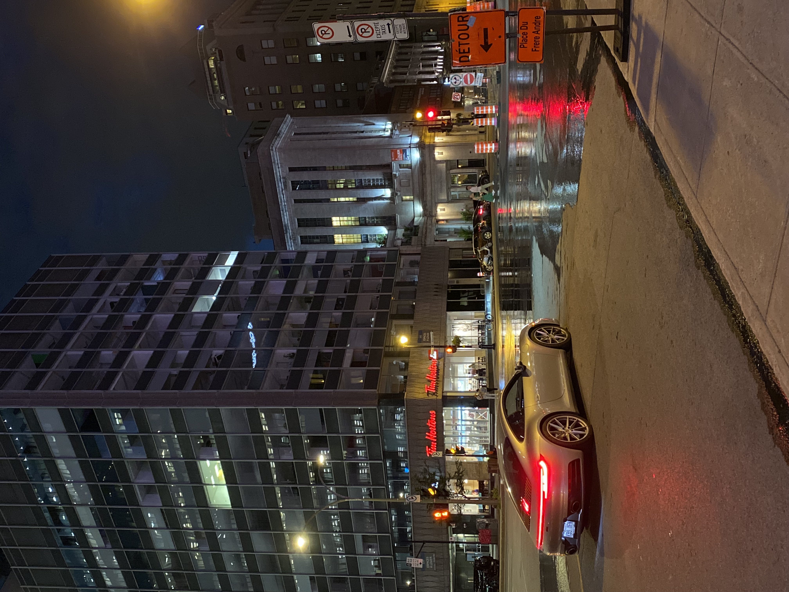
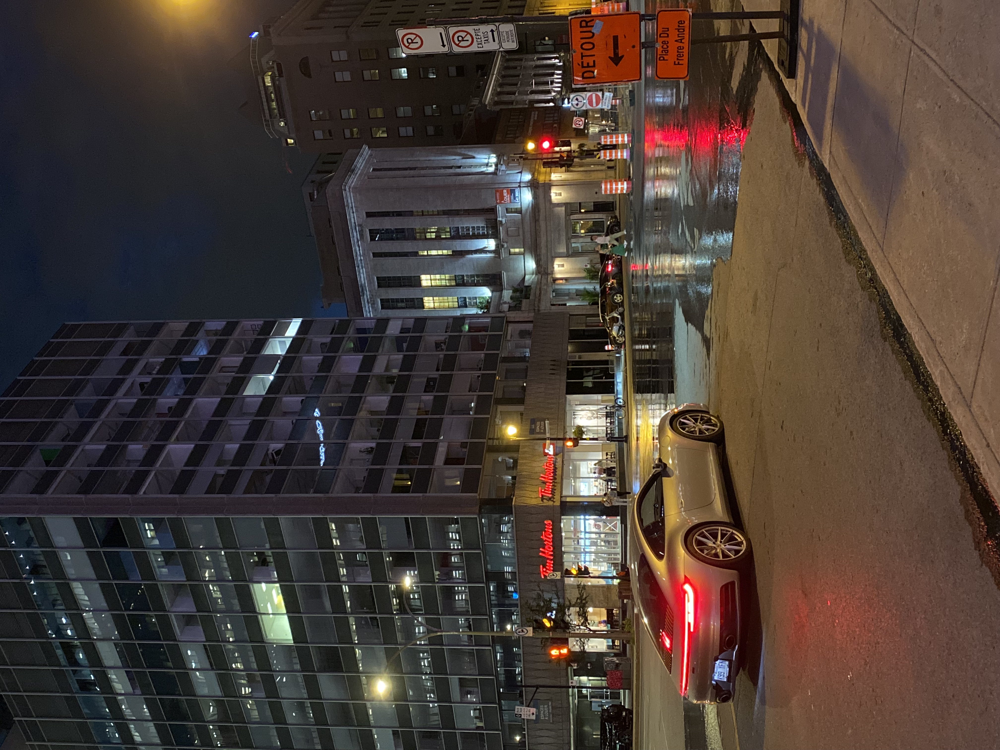

One of my main interests is the photography, especially urban travel photography. For me, traveling is the most important thing, and adding photography to it allows me to relive my travels through my photos. I take photos most of the time with my phone because the quality is very good, but also with a film cameras. I started doing this during my trip to New York in 2022, I told myself that it's not every day you get the chance to go there, so I had to immortalize the moment. Since then, I've tried to improve and learn more about this area to become better.
Below are some photos I took:
Point of interest

 
